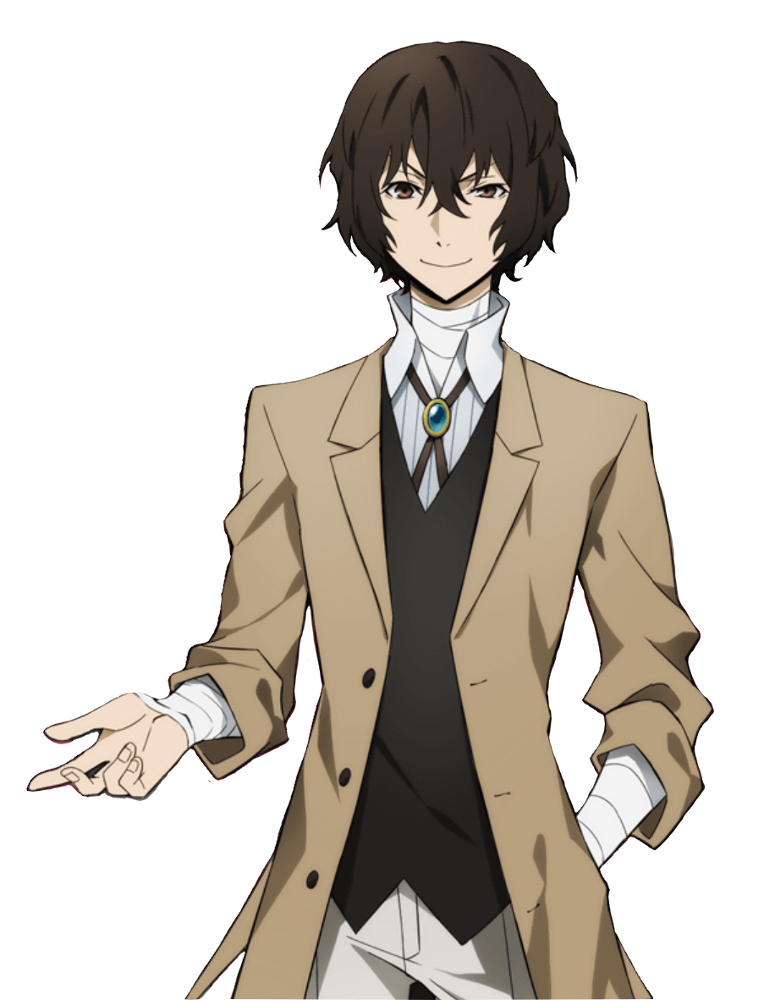
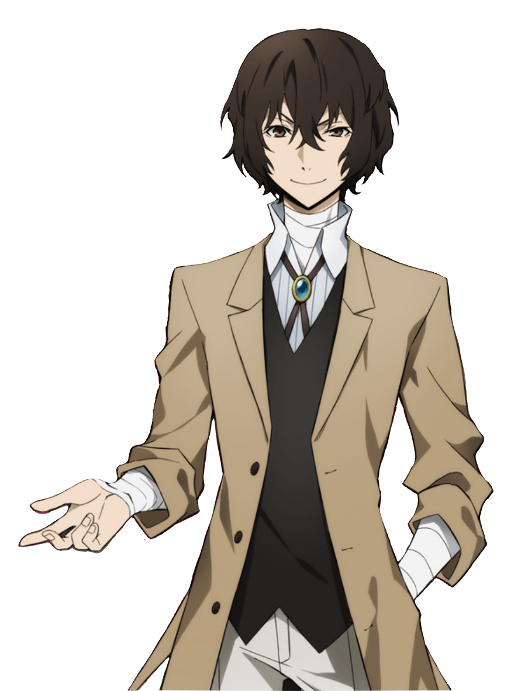

Bungo Stray Dogs (文豪ストレイドッグス, Bungō Sutorei Doggusu?, littéralement « Chiens errants littéraires ») est un seinen manga écrit par Kafka Asagiri et dessiné par Sango Harukawa. Il est prépublié depuis décembre 2012 dans le magazine Young Ace, et publié en volumes reliés depuis avril 2013 par Kadokawa Shoten. La version française est publiée par Ototo depuis février 2017. Une adaptation en anime produite par le studio Bones est diffusée entre avril et juin 2016, suivi d'une deuxième saison entre septembre et décembre 2016 sur Tokyo MX au Japon. Un film d'animation est diffusé au Japon en mars 2018. Une troisième saison est diffusée entre avril et juin 2019, une quatrième saison entre janvier et mars 2023 et une cinquième saison entre juillet et septembre 2023. La série d'animation et le film d'animation sont diffusés en streaming par la plateforme Crunchyroll dans les pays francophones. L'histoire est centrée autour de certains individus possédant des pouvoirs surnaturels et qui les utilisent à différentes fins comme gérer une entreprise, résoudre des mystères, et mener à bien des missions d'agence des détectives armés contre la mafia portuaire. Elle tourne particulièrement autour des membres de « l'agence des détectives armés » et de leur vie de tous les jours. L'histoire tourne autour d'une agence de détectives dont chaque membre possède des pouvoirs surnaturels. Cette caractéristique particulière leur donne le droit de résoudre des enquêtes trop périlleuses pour la police. Nakajima Atsushi, un jeune orphelin sur le point de mourir de faim au bord d'une rivière, se retrouve par hasard à devoir sauver un homme d'une tentative de suicide. Celui-ci n'est autre que Dazai Osamu, un membre de cette étrange agence.Voix japonaise : Mamoru Miyano, voix française : Gauthier de Fauconval1 Un membre de l'Agence des Détectives armés qui prend Atsushi sous son aile et adore flirter avec les femmes. A ses 14 ans, Dazai avait fait une tentative de suicide et a été sauvé et recueilli dans la Mafia Portuaire par Mori OugaÏ. Avec une attitude insouciante, il essaye constamment de se suicider mais a toujours échoué car il finit par être miraculeusement sauvé par quelqu'un ou quelque chose. Sa capacité s'appelle « La Déchéance d'un Homme » (Ningen Shikkaku), ce qui lui permet d'annuler n'importe quelle capacité en touchant simplement une partie du corps d'une personne et sa capacité annulera son pouvoir. Il était un capitaine de la Mafia portuaire, mais refuse de le dire à ses collègues. La mort de son ami Sakunosuke Oda le fit démissionner de la mafia et rejoindre l'Agence.
 
